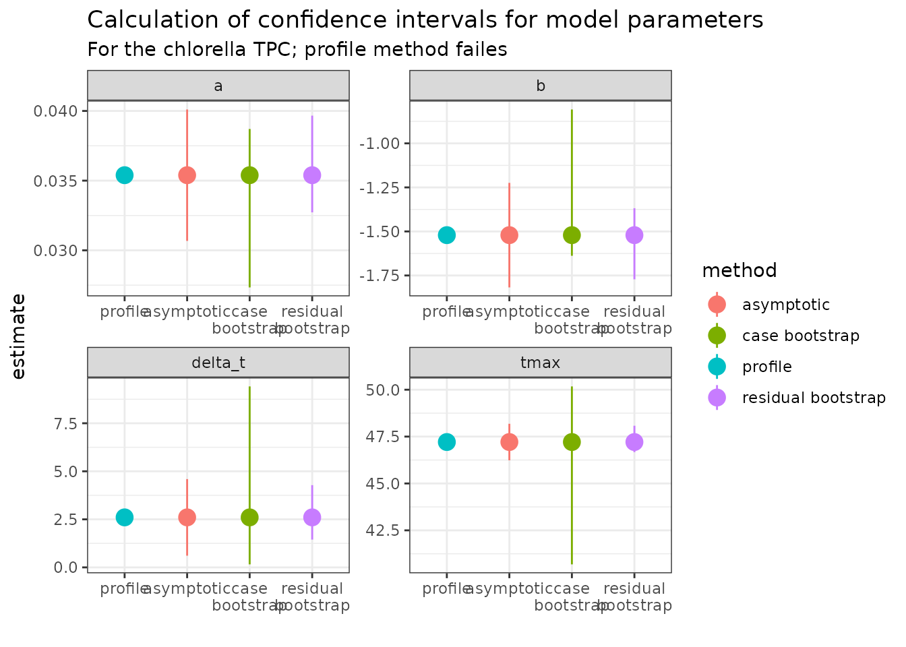

Bootstrapping with weights using rTPC
Daniel Padfield
2025-01-14
Source:vignettes/weighted_bootstrapping.Rmd
weighted_bootstrapping.RmdA brief example of how bootstrapping can be implemented alongside model weighting to account for model uncertainty alongside measurement uncertainty.
Things to consider
- Think carefully about your level of replication
- (Non-parametric) bootstrapping is a robust way of computing parameter and model prediction confidence intervals.
- Bootstrapping weighted non-linear least squares is implemented using car::Boot(), and both case and residual resampling is supported
- The outcomes of the different approaches outlined here are likely to change based on the data and the model used. Use these methods with caution and think critically about their output.
# load packages
library(boot)
library(car) # to install development version of car install.packages("car", repos = c("https://r-forge.r-project.org"), dep = FALSE)
library(rTPC)
library(nls.multstart)
library(broom)
library(tidyverse)
library(patchwork)When doing model weighting, as implemented in
vignette(model_weighting), the standard deviation of each
point can be used to account for measurement uncertainty and can improve
the model fit and reduce biases in parameter estimates. As in
vignette(bootstrapping_models)`,
car::Boot() can be used to do both case and residual
resampling on the weighted regression model.
In case resampling, each iteration re-samples the original data with replacement (where each rate, temperature and measurement error value are linked) and uses weighted weighted non-linear least squares regression on each bootstrapped dataset.
In residual resampling of weighted non-linear regression, the weights
are used as a correction to the Pearson residuals. The whole function
can be viewed by using getAnywhere(Boot.nls). For large
samples the residual method must be ok, but the small sample properties
are less clear. Where possible, we would recommend using the case
resampling bootstrap where possible because the theory is more
certain.
We will demonstrate both approaches using the example in
vignette('model_weighting'). This vignette uses the example
dataset contained within rTPC - a dataset of 60 TPCs of
respiration and photosynthesis of the aquatic algae, Chlorella
vulgaris. Instead of plotting a single curve, we average over the
biological replicates, rep, within a growth temperature
(here photosynthesis from cultures adapted to 33 ºC), to get mean rate
values at each assay temperature and their standard deviation. These are
then plotted using ggplot2. Instead of fitting
kamykowski_1985, we will instead fit
lactin2_1995 in this example.
# get curve data
data("chlorella_tpc")
d_ave <- filter(chlorella_tpc, process == 'adaptation', growth_temp == 33, flux == 'photosynthesis') %>%
group_by(temp, flux) %>%
summarise(., sd = sd(rate),
ave_rate = mean(rate),
groups = 'drop')
#> `summarise()` has grouped output by 'temp'. You can override using the
#> `.groups` argument.
d_fit <- nest(d_ave, data = c(temp, ave_rate, sd)) %>%
mutate(weighted = map(data, ~nls_multstart(ave_rate~lactin2_1995(temp = temp, a, b, tmax, delta_t),
data = .x,
iter = c(3,3,3,3),
start_lower = get_start_vals(.x$temp, .x$ave_rate, model_name = 'lactin2_1995') - 10,
start_upper = get_start_vals(.x$temp, .x$ave_rate, model_name = 'lactin2_1995') + 10,
lower = get_lower_lims(.x$temp, .x$ave_rate, model_name = 'lactin2_1995'),
upper = get_upper_lims(.x$temp, .x$ave_rate, model_name = 'lactin2_1995'),
supp_errors = 'Y',
convergence_count = FALSE,
# include weights here!
modelweights = 1/sd)))
# get predictions using augment
newdata <- tibble(temp = seq(min(d_ave$temp), max(d_ave$temp), length.out = 100))
d_preds <- d_fit %>%
mutate(., preds = map(weighted, augment, newdata = newdata)) %>%
select(-weighted) %>%
unnest(preds)
# plot
ggplot() +
geom_line(aes(temp, .fitted), d_preds) +
geom_linerange(aes(x = temp, ymin = ave_rate - sd, ymax = ave_rate + sd), d_ave) +
geom_point(aes(temp, ave_rate), d_ave, size = 2, shape = 21, fill = 'green4') +
theme_bw(base_size = 12) +
theme(legend.position = 'none',
strip.text = element_text(hjust = 0),
strip.background = element_blank()) +
labs(x ='Temperature (ºC)',
y = 'Metabolic rate',
title = 'Photosynthesis rates across temperatures') +
geom_hline(aes(yintercept = 0), linetype = 2) +
ylim(c(-0.25, 3.5))Method 1: Case resampling weighted non-linear regression.
In this method, each iteration re-samples the original data with replacement (where each rate, temperature and measurement error value are linked) and uses weighted non-linear least squares regression on each bootstrapped dataset.
# refit model using nlsLM
fit_nlsLM <- minpack.lm::nlsLM(ave_rate~lactin2_1995(temp = temp, a, b, tmax, delta_t),
data = d_ave,
start = coef(d_fit$weighted[[1]]),
lower = get_lower_lims(d_ave$temp, d_ave$ave_rate, model_name = 'lactin2_1995'),
upper = get_upper_lims(d_ave$temp, d_ave$ave_rate, model_name = 'lactin2_1995'),
weights = 1/sd)
# perform case bootstrap
boot1 <- Boot(fit_nlsLM, method = 'case')
#>
#> Number of bootstraps was 674 out of 999 attemptedWe can also create model predictions for each bootstrap and
confidence intervals of model predictions using the methods implemented
in vignette(bootstrapping_models). These can then be
plotted using ggplot2.
# predict over new data
boot1_preds <- boot1$t %>%
as.data.frame() %>%
drop_na() %>%
mutate(iter = 1:n()) %>%
group_by_all() %>%
do(data.frame(temp = seq(min(d_ave$temp), max(d_ave$temp), length.out = 100))) %>%
ungroup() %>%
mutate(pred = lactin2_1995(temp, a, b, tmax, delta_t))
# calculate bootstrapped confidence intervals
boot1_conf_preds <- group_by(boot1_preds, temp) %>%
summarise(conf_lower = quantile(pred, 0.025),
conf_upper = quantile(pred, 0.975),
.groups = 'drop')
# plot bootstrapped CIs
p1 <- ggplot() +
geom_line(aes(temp, .fitted), d_preds, col = 'black') +
geom_ribbon(aes(temp, ymin = conf_lower, ymax = conf_upper), boot1_conf_preds, fill = 'black', alpha = 0.3) +
geom_linerange(aes(x = temp, ymin = ave_rate - sd, ymax = ave_rate + sd), d_ave) +
geom_point(aes(temp, ave_rate), d_ave, size = 2, shape = 21, fill = 'green4') +
theme_bw(base_size = 10) +
theme(legend.position = 'none',
strip.text = element_text(hjust = 0),
strip.background = element_blank()) +
labs(x ='Temperature (ºC)',
y = 'Metabolic rate',
title = 'Photosynthesis rates across temperatures') +
geom_hline(aes(yintercept = 0), linetype = 2) +
ylim(c(-3, 3.5))
# plot bootstrapped predictions
p2 <- ggplot() +
geom_line(aes(temp, .fitted), d_preds, col = 'black') +
geom_line(aes(temp, pred, group = iter), boot1_preds, col = 'black', alpha = 0.007) +
geom_linerange(aes(x = temp, ymin = ave_rate - sd, ymax = ave_rate + sd), d_ave) +
geom_point(aes(temp, ave_rate), d_ave, size = 2, shape = 21, fill = 'green4') +
theme_bw(base_size = 10) +
theme(legend.position = 'none',
strip.text = element_text(hjust = 0),
strip.background = element_blank()) +
labs(x ='Temperature (ºC)',
y = 'Metabolic rate',
title = 'Photosynthesis rates across temperatures') +
geom_hline(aes(yintercept = 0), linetype = 2) +
ylim(c(-3, 3.5))
p1 + p2For this model formulation, the case resampling method gives extremely wide confidence intervals for the model predictions at high temperatures. In some of the bootstrapped datasets, the rate value at 49 ºC was not sampled, which results in a drastically different fit which predicts extremely negative rates for 49 ºC. This is likely to be a problem with models that allow negative rates, when datasets are small and there are only single points at each temperature.
Method 2: Residual resampling weighted non-linear regression.
In this method, the weights are used as a correction to the Pearson
residuals of the original model fit. These modified residuals are then
added onto the fitted model predictions, mimicking the methods used for
weighted linear regression (Algorithm 6.3 in Davison and Hinkley
(2003)). The implementation in Boot() can be viewed by
using getAnywhere(Boot.nls).
# perform residual bootstrap
boot2 <- Boot(fit_nlsLM, method = 'residual')
# predict over new data
boot2_preds <- boot2$t %>%
as.data.frame() %>%
drop_na() %>%
mutate(iter = 1:n()) %>%
group_by_all() %>%
do(data.frame(temp = seq(min(d_ave$temp), max(d_ave$temp), length.out = 100))) %>%
ungroup() %>%
mutate(pred = lactin2_1995(temp, a, b, tmax, delta_t))
# calculate bootstrapped confidence intervals
boot2_conf_preds <- group_by(boot2_preds, temp) %>%
summarise(conf_lower = quantile(pred, 0.025),
conf_upper = quantile(pred, 0.975),
.groups = 'drop')
# plot bootstrapped CIs
p1 <- ggplot() +
geom_line(aes(temp, .fitted), d_preds, col = 'black') +
geom_ribbon(aes(temp, ymin = conf_lower, ymax = conf_upper), boot2_conf_preds, fill = 'black', alpha = 0.3) +
geom_linerange(aes(x = temp, ymin = ave_rate - sd, ymax = ave_rate + sd), d_ave) +
geom_point(aes(temp, ave_rate), d_ave, size = 2, shape = 21, fill = 'green4') +
theme_bw(base_size = 10) +
theme(legend.position = 'none',
strip.text = element_text(hjust = 0),
strip.background = element_blank()) +
labs(x ='Temperature (ºC)',
y = 'Metabolic rate',
title = 'Photosynthesis rates across temperatures') +
geom_hline(aes(yintercept = 0), linetype = 2) +
ylim(c(-3, 3.5))
# plot bootstrapped predictions
p2 <- ggplot() +
geom_line(aes(temp, .fitted), d_preds, col = 'black') +
geom_line(aes(temp, pred, group = iter), boot2_preds, col = 'black', alpha = 0.007) +
geom_linerange(aes(x = temp, ymin = ave_rate - sd, ymax = ave_rate + sd), d_ave) +
geom_point(aes(temp, ave_rate), d_ave, size = 2, shape = 21, fill = 'green4') +
theme_bw(base_size = 10) +
theme(legend.position = 'none',
strip.text = element_text(hjust = 0),
strip.background = element_blank()) +
labs(x ='Temperature (ºC)',
y = 'Metabolic rate',
title = 'Photosynthesis rates across temperatures') +
geom_hline(aes(yintercept = 0), linetype = 2) +
ylim(c(-3, 3.5))
p1 + p2Calculating confidence intervals of estimated and calculated parameters
As for standard non-linear regression, bootstrapping can estimate confidence intervals of the parameters explicitly modelled in the weighted regression. We can compare this approach to profiled confidence intervals (using confint-MASS) and asymptotic confidence intervals (using nlstools::confint2()).
# get parameters of fitted model
param <- broom::tidy(fit_nlsLM) %>%
select(param = term, estimate)
# calculate confidence intervals of models
ci1 <- nlstools::confint2(fit_nlsLM, method = 'asymptotic') %>%
as.data.frame() %>%
rename(conf_lower = 1, conf_upper = 2) %>%
rownames_to_column(., var = 'param') %>%
mutate(method = 'asymptotic')
ci2 <- nlstools::confint2(fit_nlsLM, method = 'profile')
#> Waiting for profiling to be done...
#> Error in prof$getProfile(): number of iterations exceeded maximum of 50
# profiling method fails
ci2 <- mutate(ci1, method = 'profile',
conf_lower = NA,
conf_upper = NA)
# CIs from case resampling
ci3 <- confint(boot1, method = 'bca') %>%
as.data.frame() %>%
rename(conf_lower = 1, conf_upper = 2) %>%
rownames_to_column(., var = 'param') %>%
mutate(method = 'case bootstrap')
# CIs from residual resampling
ci4 <- confint(boot2, method = 'bca') %>%
as.data.frame() %>%
rename(conf_lower = 1, conf_upper = 2) %>%
rownames_to_column(., var = 'param') %>%
mutate(method = 'residual bootstrap')
ci <- bind_rows(ci1, ci2, ci3, ci4) %>%
full_join(., param)
#> Joining with `by = join_by(param)`
ggplot(ci, aes(forcats::fct_relevel(method, c('profile', 'asymptotic')), estimate, col = method)) +
geom_point(size = 4) +
geom_linerange(aes(ymin = conf_lower, ymax = conf_upper)) +
theme_bw() +
facet_wrap(~param, scales = 'free') +
scale_x_discrete('', labels = function(x) stringr::str_wrap(x, width = 10)) +
labs(title = 'Calculation of confidence intervals for model parameters',
subtitle = 'For the chlorella TPC; profile method failes') Here the profiling approach fails, and the residual method returns values that are narrower than those created from asymptotic intervals. The case bootstrap does not work well in this instance. As can be seen, these methods have their pros and cons and we leave it to the user to decide whether these approaches are sensible in each individual use-case.
The bootstrapping approaches could also be used to estimate the
uncertainty in the derived parameters, as in
vignette(bootstrapping_models).
Further reading
- John Fox (author of car) on bootstrapping regression models in R
- A.C. Davison & D.V. Hinkley (2003) Bootstrap Methods and their Application.
- Schenker, N., & Gentleman, J. F. (2001). On judging the significance of differences by examining the overlap between confidence intervals. The American Statistician, 55(3), 182-186.
- Puth, M. T., Neuhäuser, M., & Ruxton, G. D. (2015). On the variety of methods for calculating confidence intervals by bootstrapping. Journal of Animal Ecology, 84(4), 892-897.